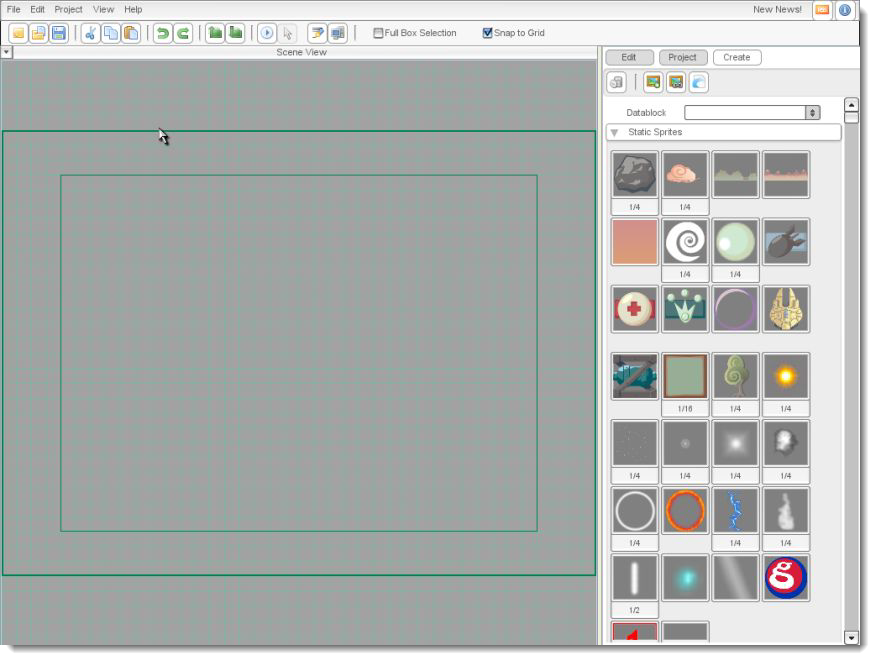
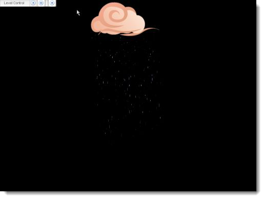

Figure 1
Torque 2D - Mounting Tutorial
In this document, you will learn how to mount objects to each other via the Scene Editor. This tutorial covers all the basics of mounting and is intended for complete beginners to T2D. Have fun!
Before we continue, we are going to need some additional images and particles. If you have not already done so in a past tutorial, click here for instructions on adding the additional assets.click here for instructions on adding the additional assets.
|
Figure 1 |
Now you should see an empty screen with the default T2D loaded content as shown below:

The scene view background colors might change in the tutorials' figures to provide optimal contrast. You can configure the color to your liking as well under Edit > Preferences... in the Scene Editor tab. With that out of the way, let's create a simple example!
From the static sprites rollout, drag the cloudsImageMap into the scene view and inside the thick dark blue-lined rectangle overlayed on the grid. This rectangle is called the camera view as shown below.
Increase the size of the image slightly. After that, scroll down in the Create Tab to the particle effects rollout. Find the rain.eff effect and drag that into the scene view as well. Increase the horizontal size of the rain so it matches the length of the large cloud. In the quick access button list that appears above a selected object when the mouse is over it, find the mount button as shown below.
After you click the button, the particle effect's midpoint is now attached to the cursor. Left click on the lower portion of the cloud to complete the mounting operation as shown below.
If you wish to check if the particle effect is truly mounted, select the cloud. In the quick edit tab, press the "Edit this objects link points" button. You should now see a small block with the number 0 where you originally clicked to mount the particle effect.
Click save in the Linkpoint Editor to continue.
Now drag the cloud over to the top right corner of the camera view. As you can see, the rain followed as well. Click on the Edit Tab and find the Physics rollout. When you've found it, change the Velocity in X to -10.
Save your scene with whatever name you wish. If you do not know how to save your scene, click here.If you do not know how to save your scene, click here.
Now press
the play button in the toolbar (click here if you do not know where the play button is)(click here if you do not know where the play button is). The cloud and rain, which is mounted
to the cloud, are moving across the screen! With object mounting it
is easy to have multiple, now connected objects share similar
properties, like velocity values as shown below.

Good job, we have the
basics now covered. Ready to learn some more advanced mounting
techniques? Start off by creating a new scene.
Now you have a fresh, new
scene to work in (all within the same project of course). Scroll
down to the rollout called Other in the Create Tab. The first object
of the three shown is called a
SceneObject. A t2dSceneObject is the base class from which all
objects, like static sprites, are derived. Drag the SceneObject into
the middle of the screen, preferably at location (0,0).
After you have done that,
you should see a bordered square.
The following will be a
slightly different way to mount objects. In the
quick access button list, select the edit link points button.
Click in the center of
the square to add a link point. You add a link point by simply
clicking anywhere on this object, the link point will be added
automatically. This will be given the number 0 as seen above.
Click on the selection tool or hit Enter to return to the Scene Editor. Now, drag the particlebeam.eff, found in the Particle
Effects rollout, and place it next to your SceneObject.
In the particle beam's
quick access button list, click on the mount button. When the particle is mounted to your cursor for
placement, notice the yellow crosshairs where we placed our link
point in the SceneObject.
When you bring the cursor
close to the crosshairs, it will snap to those coordinates. Click
again with your mouse to complete the mounting operation.
Let's learn a bit more
about how to modify mounted objects using the Scene Editor. Click on
the SceneObject. If it is hard to select from the scene view, you can
always select the object from the Project Tab, under the Object Tree.
Once you have the SceneObject selected, click on the Edit Tab and
open up the Mounting rollout. Inside there will be two editable
fields.
The first field,
Rotation, will rotate the mounted object or mount system. An
important point: the SceneObject will not be rotated, only the
particle effect that is mounted to it.
The next field, Auto
Rotation, sets the degrees per second rotation of the particle effect. Try it out, you can see it rotate
within the scene view. Leave it rotating for the next part.
Now that we have seen
what we can edit from the SceneObject, let's look at the options in
the Mounting rollout for the particle itself. Select the particle
effect and go to the Edit Tab again. Under this particular Mounting
rollout, we have a few more options.
Rotation and Auto
Rotation will not do anything if modified because these fields
only apply to the object that we mounted to, not the object
that is mounted.
Mount Force is the
force constantly applied to the object allowing it to 'chase' the
specified mount point. A force of 0 indicates that the mount is rigid
and will track the mount-point perfectly every frame.
The Track Rotation
checkbox specifies that this object should always track the target's
rotation when checked. If you uncheck this box, you can see that the
particle effect stops rotating. Check it again and it will continue
to rotate.
Owned By Mount,
when checked, indicates whether the object is to be owned by the
object it's mounting to. What this means is that when the
object that we’re mounting to is deleted, this object is
automatically deleted. This is extremely useful for objects that are
mounted that you don’t want to explicitly track.
If you check Inherit
Attributes, this indicates whether the object inherits attributes
from the object being mounted to. At the moment, the
following attributes are inherited: Enabled, Visible, Paused and
Flip.
Hopefully you have a
better understanding now of mounts and the T2D mounting system. As a
final note for this tutorial, in our last example we rotated an
object at the center of the square SceneObject box. This is also
known as it's pivot point. Any mounted object, regardless of where
the mount point is, will rotate around this pivot point. This means,
if you mounted the particle effect towards the edge of the square and
set it to rotate, it does not rotate around the mount point where
you clicked, but instead around the pivot point in the center of the
square. This is an intended feature of
T2D and not a bug.
A Different Way to Mount
Working the Edit
Tab
Conclusion